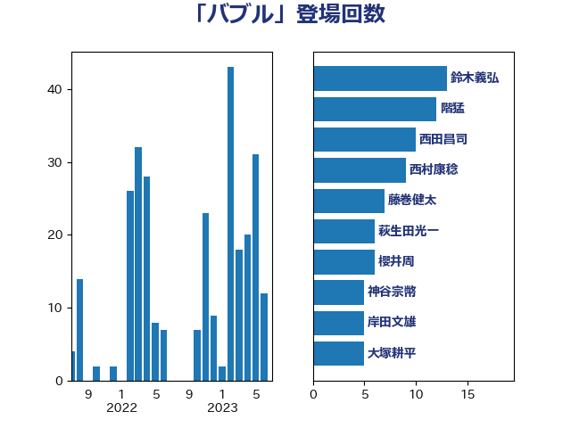

単語「バブル」

| 鈴木義弘 | 国民民主党 | 13 回 |
| 階猛 | 立憲民主党 | 12 回 |
| 西田昌司 | 自由民主党 | 10 回 |
| 西村康稔 | 自由民主党 | 9 回 |
| 藤巻健太 | 日本維新の会 | 7 回 |
| 萩生田光一 | 自由民主党 | 6 回 |
| 櫻井周 | 立憲民主党 | 6 回 |
| 神谷宗幣 | 参政党 | 5 回 |
| 岸田文雄 | 自由民主党 | 5 回 |
| 大塚耕平 | 国民民主党 | 5 回 |
| 勝部賢志 | 立憲民主党 | 5 回 |
| 奥野総一郎 | 立憲民主党 | 4 回 |
| 前原誠司 | 国民民主党 | 4 回 |
| 鈴木俊一 | 自由民主党 | 3 回 |
| 赤木正幸 | 日本維新の会 | 3 回 |
| 稲富修二 | 立憲民主党 | 3 回 |
| 福田昭夫 | 立憲民主党 | 3 回 |
| 矢倉克夫 | 公明党 | 3 回 |
| 田村智子 | 日本共産党 | 3 回 |
| 清水貴之 | 日本維新の会 | 3 回 |
| 横沢高徳 | 立憲民主党 | 3 回 |
| 末次精一 | 立憲民主党 | 3 回 |
| 岬麻紀 | 日本維新の会 | 3 回 |
| 山添拓 | 日本共産党 | 3 回 |
| 大島敦 | 立憲民主党 | 3 回 |
| 高木かおり | 日本維新の会 | 2 回 |
| 道下大樹 | 立憲民主党 | 2 回 |
| 福島伸享 | 無所属 | 2 回 |
| 礒崎哲史 | 国民民主党 | 2 回 |
| 渡辺創 | 立憲民主党 | 2 回 |
| 泉田裕彦 | 自由民主党 | 2 回 |
| 柳ヶ瀬裕文 | 日本維新の会 | 2 回 |
| 杉尾秀哉 | 立憲民主党 | 2 回 |
| 新藤義孝 | 自由民主党 | 2 回 |
| 川田龍平 | 立憲民主党 | 2 回 |
| 岡本あき子 | 立憲民主党 | 2 回 |
| 吉川元 | 立憲民主党 | 2 回 |
| 前川清成 | 日本維新の会 | 2 回 |
| 中西健治 | 自由民主党 | 2 回 |
| 上田英俊 | 自由民主党 | 2 回 |
| 阿部弘樹 | 日本維新の会 | 1 回 |
| 阿部司 | 日本維新の会 | 1 回 |
| 鈴木庸介 | 立憲民主党 | 1 回 |
| 金村龍那 | 日本維新の会 | 1 回 |
| 野田国義 | 立憲民主党 | 1 回 |
| 近藤和也 | 立憲民主党 | 1 回 |
| 藤岡隆雄 | 立憲民主党 | 1 回 |
| 落合貴之 | 立憲民主党 | 1 回 |
| 若林健太 | 自由民主党 | 1 回 |
| 芳賀道也 | 国民民主党 | 1 回 |
| 船田元 | 自由民主党 | 1 回 |
| 福田達夫 | 自由民主党 | 1 回 |
| 神谷裕 | 立憲民主党 | 1 回 |
| 神田潤一 | 自由民主党 | 1 回 |
| 石井苗子 | 日本維新の会 | 1 回 |
| 田嶋要 | 立憲民主党 | 1 回 |
| 玉木雄一郎 | 国民民主党 | 1 回 |
| 猪瀬直樹 | 日本維新の会 | 1 回 |
| 牧山ひろえ | 立憲民主党 | 1 回 |
| 瀬戸隆一 | 自由民主党 | 1 回 |
| 渡辺周 | 立憲民主党 | 1 回 |
| 浅川義治 | 日本維新の会 | 1 回 |
| 水野素子 | 立憲民主党 | 1 回 |
| 柴愼一 | 立憲民主党 | 1 回 |
| 柚木道義 | 立憲民主党 | 1 回 |
| 柘植芳文 | 自由民主党 | 1 回 |
| 斎藤アレックス | 国民民主党 | 1 回 |
| 斉藤鉄夫 | 公明党 | 1 回 |
| 後藤茂之 | 自由民主党 | 1 回 |
| 川合孝典 | 国民民主党 | 1 回 |
| 岸真紀子 | 立憲民主党 | 1 回 |
| 山際大志郎 | 自由民主党 | 1 回 |
| 山本剛正 | 日本維新の会 | 1 回 |
| 小野泰輔 | 日本維新の会 | 1 回 |
| 小沼巧 | 立憲民主党 | 1 回 |
| 小川淳也 | 立憲民主党 | 1 回 |
| 小山展弘 | 立憲民主党 | 1 回 |
| 宮下一郎 | 自由民主党 | 1 回 |
| 安江伸夫 | 公明党 | 1 回 |
| 塩川鉄也 | 日本共産党 | 1 回 |
| 堂込麻紀子 | 無所属 | 1 回 |
| 城井崇 | 立憲民主党 | 1 回 |
| 土田慎 | 自由民主党 | 1 回 |
| 土井亨 | 自由民主党 | 1 回 |
| 國重徹 | 公明党 | 1 回 |
| 吉良州司 | 無所属 | 1 回 |
| 吉田宣弘 | 公明党 | 1 回 |
| 古賀之士 | 立憲民主党 | 1 回 |
| 勝俣孝明 | 自由民主党 | 1 回 |
| 伊藤信太郎 | 自由民主党 | 1 回 |
| 中野洋昌 | 公明党 | 1 回 |
| 中条きよし | 日本維新の会 | 1 回 |
| 下条みつ | 立憲民主党 | 1 回 |
| 上田清司 | 国民民主党 | 1 回 |
| 上川陽子 | 自由民主党 | 1 回 |